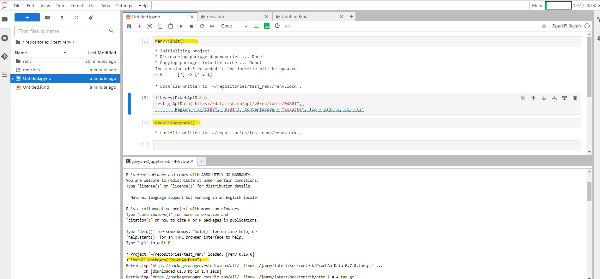

20 Installere pakker
20.1 Python
Installering av pakker er kun er mulig I et virtuelt miljø. Det er anbefalt å benytte poetry til dette. Eksemplene videre tar derfor utgangspunkt i et poetry prosjekt.
Det er mulig å installere pakker med pip. Pakker kan installeres som normalt, hvis man har satt opp og aktivert et virtuelt miljø.
20.1.1 Poetry prosjekt eksempel
Dette eksemplet viser hvordan man setter oppe et enkelt poetry prosjekt kalt test, hvis man ønsker å benytte et annet prosjektnavn må man endre dette i hver av kommandoene.
Sett opp prosjektet:
poetry new testNaviger inn i prosjektmappen:
cd testBruk poetry install for å bygge prosjektet:
poetry installHvis man får en tilbakemelding som denne er prosjektet satt opp korrekt:
Creating virtualenv test-EojoH6Zm-py3.10 in /home/jovyan/.cache/pypoetry/virtualenvs
Updating dependencies
Resolving dependencies... (0.1s)
Writing lock file 20.1.2 Installering
For å legge til pakker i et prosjekt benyttes kommandoen poetry add.
Skal man legge til pakken “pendulum” vil det se slik ut:
poetry add pendulumPoetry tilbyr måter å sette versjonsbegrensninger for pakker som legges til i et prosjekt, dette kan man lese mer om her.
20.1.3 Avinstallering
For å fjerne pakker fra et prosjekt benytter man poetry remove.
Hvis man ønsker å fjerne “pendulum” fra et prosjekt vil kommandoen se slik ut:
poetry remove pendulum20.1.4 Oppgradere pakker
For å oppdatere pakker i et prosjekt benytter man kommandoen poetry update.
Skal man oppdatere pakken “pendulum” bruker man:
poetry update pendulumSkal man oppdatre alle pakken i et prosjekt benytter man:
poetry update 20.1.5 Legge til kernel for poetry
For å kunne benytte det virtuelle miljøet i en notebook må man sette opp en kernel. Kernel burde gis samme navn som prosjektet.
Først legger man til ipykernel:
poetry add ipykernelSå opprettes kernel med:
poetry run python -m ipykernel install --user --name testEtter dette er kernelen test opprettet og kan velges for å benytte miljøet i en notebook.
20.1.6 Fjerne kernel
For å fjerne en kernel med navn test bruker man:
jupyter kernelspec remove testDu vil bli spurt om å bekrefte, trykk y hvis man ønsker å slette:
Kernel specs to remove:
test /home/jovyan/.local/share/jupyter/kernels/test
Remove 1 kernel specs [y/N]: yEtter dette er kernelen fjernet.
20.1.7 Sikkerhet
Hvem som helst kan legge til pakker på PyPi, det betyr at de i verstefall, kan inneholde skadelig kode. Her er en list med viktige tiltak som minimere risikoen:
Før man installerer pakker bør man alltid søke de opp på https://pypi.org. Det er anbefalt å klippe og lime inn pakkenavnet når man skal legge det til i et prosjekt.
Er det et populært/velkjent prosjekt? Hvor mange stjerner og forks har repoet?
20.2 R
Installering av pakker for R-miljøet i Jupyterlab er foreløpig ikke en del av ssb-project. Men vi kan bruke renv. Mer kommer.
20.2.1 Installering
For å installere dine egne R-pakker må du opprette et virtuelt miljø med renv. Gå inn i Jupyterlab og åpne R-notebook. Deretter skriver du inn følgende i kodecelle:
renv::init()Denne kommandoer aktiverer et virtuelt miljø i mappen du står i. Rent praktisk vil det si at du fikk følgende filer/mapper i mappen din:
renv.lock
En fil som inneholder versjoner av alle pakker du benytter i koden din.
renv
Mappe som inneholder alle pakkene du installerer.
Nå som vi har et virtuelle miljøet på plass kan vi installere en R-pakke. Du kan gjøre dette fra både terminalen og fra en Notebook. Vi anbefaler på gjøre det fra terminalen fordi du da får tilbakemelding på om installeringen gikk bra heller ikke. For å installere i terminalen gjør du følgende:
- Åpne en terminal i Jupyterlab
- Stå i mappen der du aktiverte det virtuelle miljøet
- Skriv in
Rog trykk enter.
Det vi nå har gjort er å åpne R fra terminalen slik at vi kan skrive R-kode direkte i terminalen. Det omtales ofte som en R Console. Nå kan du skrive inn en vanlig kommando for å installere R-pakker:
install.packages("PxWebApiData")Over installerte vi pakken PxWebApiData som er en pakke skrevet i SSB for å hente ut data fra vår statistikkbank. La oss bruke pakken i koden vår med ved å skrive følgende i kodecelle i Notebooken vår:
library(PxWebApiData)
ApiData("https://data.ssb.no/api/v0/en/table/04861",
Region = c("1103", "0301"), ContentsCode = "Bosatte", Tid = c(1, 2, -2, -1))Når vi nå har brukt PxWebApiData i koden vår så kan vi kjøre en kommando som legger til den pakken i renv.lock. Men før vi kan gjøre det må vi være obs på at renv ikke klarer å gjenkjenne pakker som er i bruk Notebooks (ipynb-filer). Det er veldig upraktisk, men noe vi må forholde oss til når vi jobber med renv i Jupyterlab. En mulig løsning for dette er å bruke Jupytext til å synkronisere en ipynb-fil med en Rmd-fil. renv kjenner igjen både R- og Rmd-filer. For å synkronisere filene gjør du følgende:
- Trykk
Ctrl+Shift C - Skriv inn Pair i søkefeltet som dukker opp
- Velg Pair Notebook with R Markdown
Hvis du nå endrer en av filene så vil den andre oppdatere seg, og renv vil kunne oppdage om du bruker en pakke i koden din. Men for å trigge renv til å lete etter pakker som er i bruk så må du skrive følgende kode i Notebooken eller R Console:
renv::snapshot()Kikker du nå inne i renv.lock-filen så ser du nå at verjsonen av PxWebApiData er lagt til. I bildet under ser du hvordan et arbeidsmiljø typisk kan se ut når man installerer sine egne pakker.
